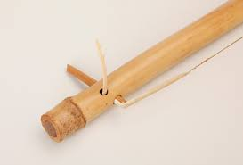
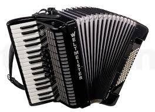
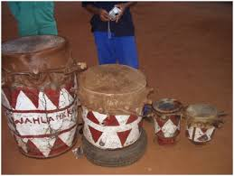
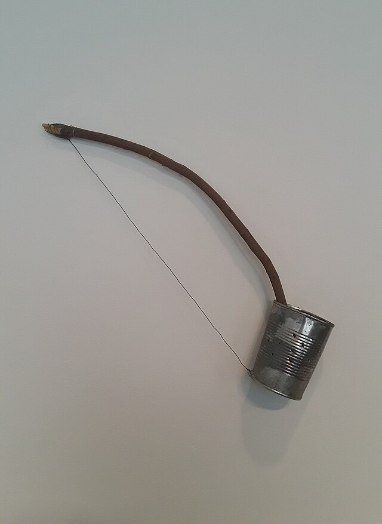
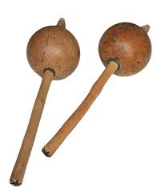
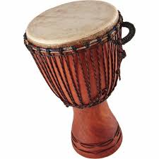
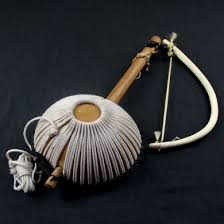
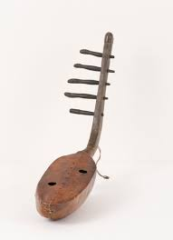

MOKHIBO
Performed by Basotho women, on their knees, moving shoulders. Led by a performer blowing a whistle (Phala) to direct choreography.
Performed by Basotho women, on their knees, moving shoulders. Led by a performer blowing a whistle (Phala) to direct choreography.
Performed by girls, wearing skirts from shredded maize bags with metal bottle caps for noise.
Performed by both genders, holding sticks, colorful costumes, energetic foot-stamping, and drum beats.
Performed by men and boys, with vocal chants, praises, and poetry.
Is performed by boys ,holiding sticks/p>
Performed by girls and boys, girls charm and choose boys.
Game involving passing items quickly, with footwork.
is performed by girls,spinning around.
Is a Basotho traditional instrument used to make music.
Is a Basotho traditional instrument to play music called(mino oa koriana/accordion music).
Is a Basotho traditional trump made from animal skin.
Is a Basotho traditional instrument.made with a can at the bottom and stick and string.
Basotho instrument
Is a Basotho traditional trump.
is an instrument used to make a sound.
is a traditional instrument.

Is a Basotho traditional instrument.
